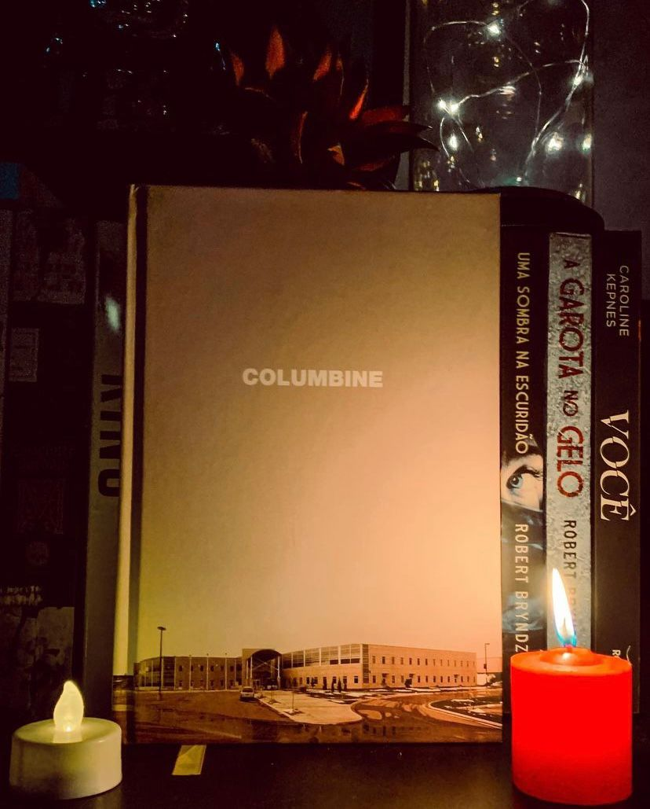

Columbine
(Dave Cullen - Darkside)
⭐⭐⭐⭐⭐
⚠️Violência, assassinato.
Sem sombra de dúvidas foi um dos melhores livros que li em 2021, daqueles que você não consegue deixar de lado e isto se deve a narrativa totalmente envolvente de Dave Cullen, que faz com que você queira saber mais e mais sobre o desenrolar trágico de 1999.
O dia 20 de abril de 1999 deixou uma marca indelével na história norte-americana. O Massacre de Columbine pode não ter sido o primeiro tiroteio em massa, mas foi o primeiro da era digital ― e o primeiro de larga magnitude. Na esteira dos acontecimentos de Newtown, Aurora, Virginia Tech, Christchurch, Suzano e Ohio, torna-se cada vez mais urgente compreender e confrontar acontecimentos como o de Columbine. Nossa arma é reaprender a ouvir a dor que cresce em silêncio no outro e no cerne dos valores da nossa sociedade.
Dave Cullen vai trazer aos leitores de forma detalhada e sem sensacionalismo todos os acontecimentos que permeiam o massacre: como era a vida dos estudantes antes e como tudo foi muito panejado, a vida de todos os envolvidos, a escola, como a imprensa abordou tudo aquilo e todo sensacionalismo. A vida dos sobreviventes também é abordada e como tudo ficou no imaginário popular, afinal estamos falando de um dos maiores ataques com armas de fogo até então.
A narrativa é fluida, apesar do tema o autor consegue encontrar uma forma de fazer com que as coisas se tornem interessantes e que faz com que você queira avançar apesar do tema pesado!